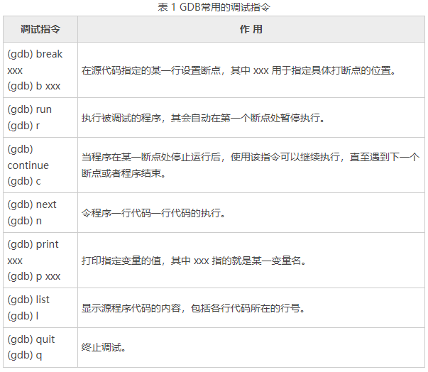
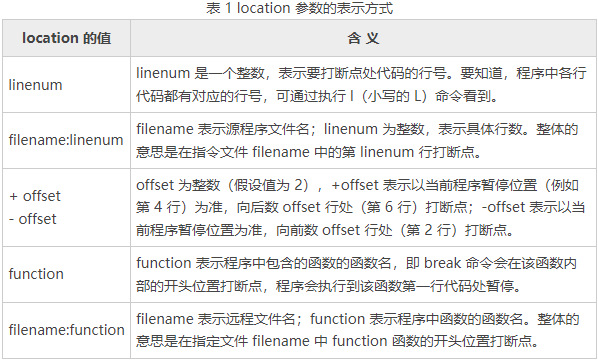
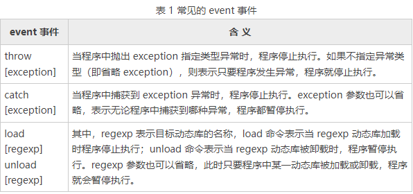

GDB | gdb的使用
未完成——
GDB 简介
程序中的错误主要分为 2 类，分别为语法错误【编译器可以发现，并容易解决】和逻辑错误【运行时不报错，但是结果不正确，需要调试】。GDB 全称“GNU symbolic debugger”，是 Linux 下常用的程序调试器。
总的来说，借助 GDB 调试器可以实现以下几个功能：
- 程序启动时，可以按照我们自定义的要求运行程序，例如设置参数和环境变量；
- 可使被调试程序在指定代码处暂停运行，并查看当前程序的运行状态（例如当前变量的值，函数的执行结果等），即支持断点调试；
- 程序执行过程中，可以改变某个变量的值，还可以改变代码的执行顺序，从而尝试修改程序中出现的逻辑错误。
可以通过命令 gdb -v，查看当前系统是否有安装 GDB 调试器。
GDB 调试 C/C++ 程序
使用 GDB 的前期准备
只有将源代码文件编译成可执行文件并执行后，才可以用 GDB 进行调试。但需要注意的是，仅使用 gcc（或 g++）命令编译生成的可执行文件，是无法借助 GDB 进行调试的。
需要使用 gcc -g 选项编译源文件，才可生成满足 GDB 要求的可执行文件。
值得一提的是，GCC 编译器支持 -O（等于同 -O1，优化生成的目标文件）和 -g 一起参与编译。GCC 编译过程对进行优化的程度可分为 5 个等级，分别为 O0~O4，O0 表示不优化（默认选项），从 O1 ~ O4 优化级别越来越高，O4 最高。
所谓优化，例如省略掉代码中从未使用过的变量、直接将常量表达式用结果值代替等等，这些操作会缩减目标文件所包含的代码量，提高最终生成的可执行文件的运行效率。
启动 GDB 调试器
-
调试尚未执行的程序
在生成包含调试信息的可执行文件的基础上，启动 GDB 调试器的指令如下
1
$ gdb 可执行文件名
-
调试正在执行的程序
**GDB 可以调试正在运行的程序。**比如有一个死循环程序，那么可以在它运行的过程中进行调试，步骤如下：
-
首先，利用 gcc -g 选项编译源文件，生成满足 GDB 要求的可执行文件。
-
运行可执行文件，使用 pidof 指令获取对应的进程号。
-
在取得进程号的基础上，调用 GDB 对该程序进行调试。有如下3种方式：
1
2
3
4
5
6# 法1
$ gdb attach PID
# 法2
$ gdb 可执行文件名 PID
# 法3
$ gdb -p PID -
注意，当调试完成后，如果想令当前程序进行执行，消除调试操作对它的影响，需手动将 GDB 调试器与程序分离，分离过程分为 2 步：
- 执行 detach 指令，使 GDB 调试器和程序分离；
- 执行 quit（或 q）指令，退出 GDB 调试。
-
-
调试执行异常崩溃的程序
当程序出现内存访问越界，非法使用空指针时，会导致程序崩溃，此时需要调试程序。
在 Linux 上，程序执行崩溃的时候，系统会将错误信息记录到 core 文件中。通过 GDB 调试 core 文件，可以更快地定位并解决问题。
**可以通过指令
ulimit -a查看目前系统是否开启了 core dump 功能。**如果 core file size（core 文件大小）对应的值为 0，表示当前系统未开启 core dump 功能。这种情况下，可以通过执行指令
ulimit -c ulimited改变 core 文件的大小。由此，当程序执行发生异常崩溃时，系统就可以自动生成相应的 core 文件。例如，假设 main.c 内部发生了段错误。则对 main.c 调用 GDB 进行调试的过程如下：
1
2
3$ gcc main.c -o main.exe -g # 生成包含调试信息的可执行文件
$ ./main.exe # 执行程序，发生段错误
$ gdb main.exe core # 调用GDB进行调试
GDB 中的常用指令
GDB 中的常用指令如下表所示：

启动程序
run 和 start 指令都可以用来在 GDB 调试器中启动程序，它们之间的区别是：
- 默认情况下，run 指令会一直执行程序，直到执行结束。如果程序中手动设置有断点，则 run 指令会执行程序至第一个断点处；
- start 指令会执行程序至 main() 主函数的起始位置，即在 main() 函数的第一行语句处停止执行（该行代码尚未执行）。
在进行 run 或者 start 指令启动目标程序之前，还可能需要做一些必要的准备工作，大致包括以下几个方面：
-
如果启动 GDB 调试器时未指定要调试的目标程序，或者由于各种原因 GDB 调试器并为找到所指定的目标程序，这种情况下就需要再次手动指定；
- 在 gdb 内部使用
file指令，打开想要调试的文件
- 在 gdb 内部使用
-
有些 C 或者 C++ 程序的执行，需要接收一些参数（程序中用 argc 和 argv[] 接收）
-
启动 GDB 调试器时，可以在指定目标调试程序的同时，使用 --args 选项指定需要传递给该程序的数据。
1
2# gdb --args 目标调试文件 参数
$ gdb --args main.exe a.txt -
GDB 调试器启动后，可以借助
set args命令指定目标调试程序启动所需要的数据。 -
可以使用 run 或者 start 启动目标程序时，指定其所需要的数据
1
2(gdb) run a.txt
(gdb) start a.txt
-
-
目标程序在执行过程中，可能需要临时设置 PATH 环境变量；
-
借助 path 指令修改 PATH 环境变量
1
(gdb) path /temp/demo
-
-
默认情况下，GDB 调试器将启动时所在的目录作为工作目录，但很多情况下，该目录并不符合要求，需要在启动程序手动为 GDB 调试器指定工作目录。
-
默认情况下，GDB 调试器的工作目录为启动时所使用的目录。可以在 gdb 内部使用 cd 指令，修改 GDB 的工作目录
1
(gdb) cd /tmp/demo
-
-
默认情况下，GDB 调试器启动程序后，会接收键盘临时输入的数据，并将执行结果会打印在屏幕上。但 GDB 调试器允许对执行程序的输入和输出进行重定向，使其从文件或其它终端接收输入，或者将执行结果输出到文件或其它终端。指令如下：
1
(gdb) run > a.txt
设置断点
在 GDB 内部，使用 break 指令设置断点。break 命令常用的语法格式有以下 2 种。
1 | 1、(gdb) break location # b location |
格式2的含义为：每次程序执行到 … 位置时都计算 cond 的值，如果为 True，则程序在该位置暂停；反之，程序继续执行。
location 参数有如下几种设置方式：

实时监控变量值
在 GDB 内部使用 watch 命令，可以监控程序中某个变量或者表达式的值，只要发生改变，程序就会停止执行。命令如下：
1 | (gdb) watch conde # conde 指的就是要监控的变量或表达式。 |
要查看当前建立的观察点数量，可以使用如下指令：
建立捕捉断点
捕捉断点的作用是，监控程序中某一事件的发生，例如程序发生某种异常时、某一动态库被加载时等等，一旦目标事件发生，则程序停止执行。建立捕捉断点的指令如下：
1 | (gdb) catch event # event 参数表示要监控的具体事件。 |
当 catch 命令捕获到指定的 event 事件时，程序暂停执行的位置往往位于某个系统库（例如 libstdc++）中。这种情况下，通过执行 up 命令，即可返回发生 event 事件的源代码处。
常用的 event 事件类型如下表所示：
